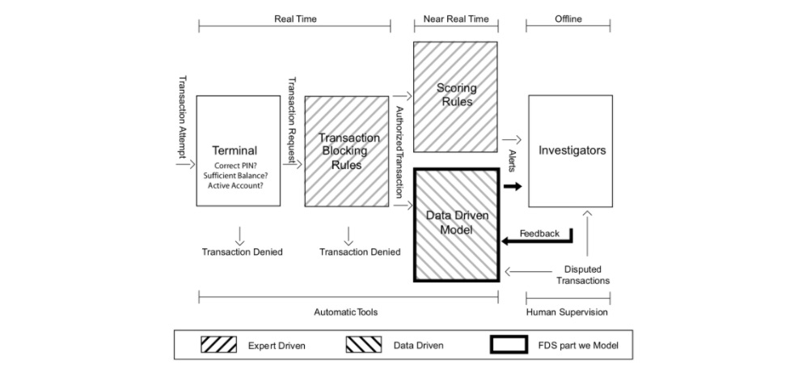

3. Credit card fraud detection system¶
A credit card Fraud Detection System (FDS) is typically composed of a set of five layers of control [DP15, DPBC+17], as illustrated in Fig. 1. 
Fig. 1. Diagram illustrating the layers of control in an FDS. Our focus in this book is mostly on the data-driven model, which helps investigators by raising alerts on the most suspicious transactions.
The first two layers (Terminal and Transaction Blocking Rules) are executed in real-time (i.e. within milliseconds and before authorization). The next two layers (Scoring Rules and Data-Driven Model (DDM)), are executed in near real-time to potentially block the card and prevent additional frauds. Finally, the last layer (Investigators) is the only one requiring human intervention and is carried out offline. We describe each of these layers in more detail below.
3.1. Terminal¶
The terminal represents the first control layer in an FDS and performs conventional security checks on all the payment requests [MekterovicBrkicBaranovic18, VVBC+15]. Security checks include controlling the PIN code (possible only in case of cards provided with chip), the number of attempts, the card status (either active or blocked), the balance available, and the expenditure limit. These operations have to be performed in real-time (response has to be provided in a few milliseconds), during which the terminal queries a server of the card-issuing company. Requests that do not pass any of these controls are denied, while the others become transaction requests that are processed by the second layer of control.
3.2. Transaction-Blocking Rules¶
Transaction-blocking rules are if-then (-else) statements meant to block transaction requests that are perceived as frauds [DP15, DPBC+17]. These rules use the information available when the payment is requested, without analyzing historical records or cardholder profiles. An example of a blocking rule could be: “IF internet transactions AND unsecured website THEN deny the transaction”. In practice, several transaction-blocking rules are simultaneously executed, and transactions firing any of these rules are blocked (though cards are not deactivated). Transaction-blocking rules are manually designed by the investigator and, as such, are expert-driven components of the FDS. To guarantee real-time operations and avoid blocking many genuine transactions, blocking rules should be: i) quick to compute and ii) very precise, namely should raise very few false alarms.
All transactions passing blocking rules are finally authorized. However, the fraud detection activity continues after having enriched transaction data with aggregated features used to contextualize the current purchase with respect to the previous ones and the cardholder profile. These aggregated features include, for instance, the average expenditure, the average number of transactions in the same day, or the location of the previous purchases [DP15, VVBC+15, WHJ+09]. The process of computing aggregated features is referred to as feature engineering or feature augmentation. Augmented features and current transaction data are stacked in a feature vector that is supposed to be informative for determining whether the authorized transaction is fraudulent or genuine. The Scoring Rules and Data-Driven Model (DDM) layers of the FDS operate on this feature vector.
3.3. Scoring Rules¶
Scoring rules are also expert-driven models that are expressed as if-then (-else) statements [CDPLB+18, DPBC+17]. However, these operate on feature vectors and assign a score to each authorized transaction: the larger the score, the more likely the transaction to be a fraud. Scoring rules are manually designed by investigators, which arbitrarily define their associated scores. An example of a scoring rule can be “IF previous transaction in a different continent AND less than one hour from the previous transaction THEN fraud score = 0.95”. Unfortunately, scoring rules can detect only fraudulent strategies that have already been discovered by investigators, and that exhibit patterns involving few components of the feature vectors. Moreover, scoring rules are rather subjective, since different experts design different rules. Finally, they can be incomplete and are difficult to maintain over time.
3.4. Data-Driven Model (DDM)¶
This layer is purely data-driven and adopts a classifier or another statistical model to estimate the probability for each feature vector to be a fraud. This probability is used as the fraud score associated with the authorized transactions. Thus, the data-driven model is trained from a set of labeled transactions and cannot be interpreted or manually modified by investigators. An effective data-driven model is expected to detect fraudulent patterns by simultaneously analyzing multiple components of the feature vector, possibly through nonlinear expressions. Therefore, the DDM is expected to find frauds according to rules that go beyond investigator experience, and that do not necessarily correspond to interpretable rules [Car18, DP15].
3.5. Investigators¶
Investigators are professionals experienced in analyzing credit card transactions and are responsible for the expert-driven layers of the FDS. In particular, investigators design transaction-blocking and scoring rules.
Investigators are also in charge of controlling alerts raised by the scoring rules and the DDM, to determine whether these correspond to frauds or false alarms [DP15]. In particular, they visualize all the suspicious transactions in a case management tool, where all the information about the transaction is reported, including the assigned scores/probabilities, which in practice indicate how risky each transaction is. Investigators call cardholders and, after having verified, assign the label “genuine” or “fraudulent” to the alerted transaction, and return this information to the FDS. In the following, we refer to these labeled transactions as feedbacks and use the term alert-feedback interaction to describe this mechanism yielding supervised information in a real-world FDS.
Any card that is suspected of fraud is immediately blocked to prevent further fraudulent activities. Typically, investigators check all the recent transactions from a compromised card, which means that each detected fraud can potentially generate more than one feedback, not necessarily corresponding to alerts or frauds. In a real-world FDS, investigators can only check few alerts per day [Car18, DP15, Kri10] as this process can be long and tedious. Therefore, the primary goal of a DDM is to return precise alerts, as investigators might ignore further alerts when too many false alarms are reported.
In recent systems, transactions associated with very high-risk scores can bypass investigators and be directly sent to the cardholder for feedback requests (e.g. by SMS). This addition is interesting for an accelerated processing and a larger feedback bandwidth. However, it should be done with caution to avoid jeopardizing the customer’s trust.